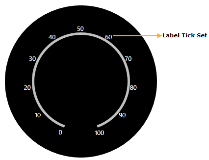

LabelTick is used to set the label values for the ticks. Label tick can be assigned to major tickset or minor tickset but the default tickstyle for labelTick is MajorTickSet.
|
[XAML]
<sfgauge:CircularGauge Height="Auto" Width="Auto" Radius="170" Name="circularGauge1" FrameType="Circular" Margin="3"> <sfgauge:CircularGauge.Scales> <sfgauge:CircularScale x:Name="m_scale" Radius="100" StartAngle="110" GapSweepAngle="320" ScaleBarSize="5" ShadowOffset="5" Minimum="0" Maximum="100" MinorIntervalValue="2" MajorIntervalValue="10" BorderBrush="Gray" Background="Silver" Location="50,50"> <sfgauge:CircularScale.Ticks> <sfgauge:LabelTickSet FontSize="13" Background="Silver" Name="m_label" TickPlacement="Outside" VerticalContentAlignment="Bottom" DistanceFromScale="0"/> </sfgauge:CircularScale.Ticks> </sfgauge:CircularScale> </sfgauge:CircularGauge.Scales> </sfgauge:CircularGauge> |
|
[C#]
CircularGauge circulargauge1 = new CircularGauge(); PivotItem pivotitem = new PivotItem(); pivotitem.Content = circulargauge1; LayoutRoot.Children.Add(pivotitem);
CircularScale c_scale = new CircularScale(); c_scale.Radius = 110; c_scale.StartAngle = 120; c_scale.GapSweepAngle = 300; c_scale.ScaleBarSize = 10; c_scale.Location = new Point(50, 50); c_scale.ShadowOffset = 5; c_scale.ShadowOffset = 5; c_scale.Minimum = 0; c_scale.Maximum = 100; c_scale.MinorIntervalValue = 2; c_scale.MajorIntervalValue = 10; c_scale.Background = new SolidColorBrush(Colors.LightGray); c_scale.BorderBrush = new SolidColorBrush(Colors.Blue); c_scale.BorderThickness = new Thickness(0.5); circulargauge1.Scales.Add(c_scale);
// Adding LabelTick. LabelTickSet c_label = new LabelTickSet(); c_label.FontSize = 15; c_label.Foreground = new SolidColorBrush(Colors.White); c_label.FontFamily = new FontFamily("Arial"); c_label.DistanceFromScale = 5; c_label.TickPlacement = ScalePlacement.Inside; c_label.Background = new SolidColorBrush(Colors.Brown); c_scale.Ticks.Add(c_label); |

Figure 29: Label TickSet added to the Scale
Essential Gauge supports formula based label ticks.
This is achieved by setting the EnableFormulaCalculation property to True, and specifying a valid formula to the LabelFormula property. The value of the LabelTickSet property is calculated based upon the formula that is specified.
|
[XAML]
<sfgauge:CircularGauge Height="Auto" Width="Auto" Radius="170" Name="circularGauge1" FrameType="Circular" Margin="3"> <sfgauge:CircularGauge.Scales> <sfgauge:CircularScale x:Name="m_scale" Radius="100" StartAngle="110" GapSweepAngle="320" ScaleBarSize="5" ShadowOffset="5" Minimum="0" Maximum="100" MinorIntervalValue="2" MajorIntervalValue="10" BorderBrush="Gray" Background="Silver" Location="50,50"> <sfgauge:CircularScale.Ticks> <sfgauge:LabelTickSet FontSize="13" Foreground="Silver" Name="m_label" EnableFormulaCalculation="True" LabelFormula="(2+x)*10" TickPlacement="Outside" VerticalContentAlignment="Bottom" DistanceFromScale="0"/> </sfgauge:CircularScale.Ticks> </sfgauge:CircularScale> </sfgauge:CircularGauge.Scales> </sfgauge:CircularGauge> |
|
[C#]
CircularGauge circulargauge1 = new CircularGauge(); PivotItem pivotitem = new PivotItem(); pivotitem.Content = circulargauge1; LayoutRoot.Children.Add(pivotitem);
CircularScale c_scale = new CircularScale(); c_scale.Radius = 110; c_scale.StartAngle = 120; c_scale.GapSweepAngle = 300; c_scale.ScaleBarSize = 10; c_scale.Location = new Point(50, 50); c_scale.ShadowOffset = 5; c_scale.ShadowOffset = 5; c_scale.Minimum = 0; c_scale.Maximum = 100; c_scale.MinorIntervalValue = 2; c_scale.MajorIntervalValue = 10; c_scale.Background = new SolidColorBrush(Colors.LightGray); c_scale.BorderBrush = new SolidColorBrush(Colors.Blue); c_scale.BorderThickness = new Thickness(0.5); circulargauge1.Scales.Add(c_scale);
// Adding LabelTick. LabelTickSet c_label = new LabelTickSet(); c_label.FontSize = 15; c_label.LabelForeground = new SolidColorBrush(Colors.White); c_label.FontFamily = new FontFamily("Ariel"); c_label.DistanceFromScale = 5; c_label.EnableformulaCalculation = true; c_label.LabelFormula = (2 + x) * 10; c_label.TickPlacement = ScalePlacement.Inside; c_label.Foreground = new SolidColorBrush(Colors.Brown); c_scale.Ticks.Add(c_label); |